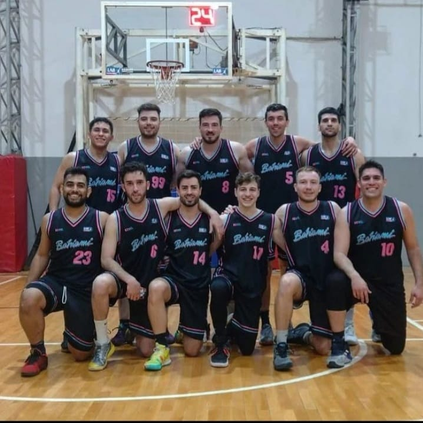

Esta institución es una franquicia deportiva amateur dedicada exclusivamente al basquetbol. Fue fundada en el año 2022, con sede en la ciudad de Bahia Blanca. Actualmente participa en la segunda división de la Liga Amateur de Basquetbol bahiense siendo serio candidato al campeonato y a su consecuente ascenso
"Somos un equipo formado a partir de un grupo de amigos el cual esta integrado por exjugadores de la ciudad de Bahia Blanca, los cuales decidimos dedicarnos al amateurismo. Nuestro objetivo es lograr que la franquicia que creamos con tanto esfuerzo y dedicacion se gane un renombre a nivel nacional sin dejar de lado el sector competitivo" Gonzalo Zanconi
NOTICIAS SIFONERAS
A SEMIS
El conjunto sifonero logro la clasificacion a las semifinales de su division y se enfrentara a Shampoo luego de haber derrotado a Autenticos Verdugos. El resultado fue un para nada abultado 55-54, en un partido en el que primo la defensa y la efectividad de Mauro Baes, Gonzalo Zanconi y Martin Villoldo en ataque
SE VIENE SHAMPOO
¿Podra Bahiami llegar a la tan ansiada final? Se vera en la proxima serie cuando el sifonero se encuentre con los puntaltenses en las semifinales. Luego de la perdida de su maxima estrella Martin Quevedo luego de una lesion en su rodilla producida en los Juegos Universitarios Nacionales el elenco "sifone" debera ingeniarselas con la direccion de Belate, la defensa de Mehdi, el tiro exterior de Zanconi, la jerarquia de Baes y la fuerza de Villoldo